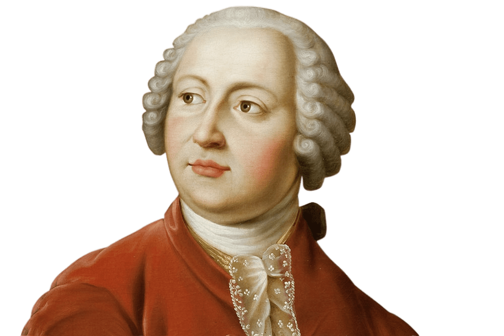

Михаил Васильевич Ломоносов
„Всё великое начинается
с прекрасного…“
Полное имя
Михаил Васильевич Ломоносов
Известен как
Русский учёный-естествоиспытатель
Оружие / Способности
Кинжалы
Пол
♀ Женский
Место рождения
деревня Мишанинская,
(ныне - село Ломоносово)

Первый крупный русский учёный-естествоиспытатель, известный также как полимат. Будучи ярким примером «универсального человека», он проявил себя как энциклопедист, физик и химик.
вошёл в науку как первый химик, который дал физической химии определение, весьма близкое к современному, и предначертал обширную программу физико-химических исследований; его молекулярно-кинетическая теория тепла во многом предвосхитила современное представление о строении материи и многие фундаментальные законы, в числе которых - одно из начал термодинамики.